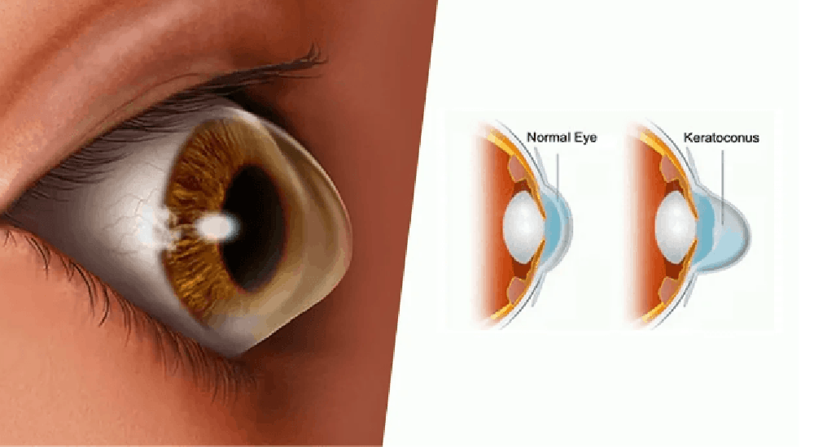

Keratoconus Treatment by Kiran Challa, Optometrist
Introduction to Keratoconus

Keratoconus is a progressive eye condition that causes the cornea to thin and bulge into a cone-like shape, leading to distorted and blurred vision. This condition affects the cornea's ability to focus light properly, resulting in visual impairment. Early diagnosis and appropriate treatment are essential to manage Keratoconus effectively.
Causes of Keratoconus
The exact causes of Keratoconus are not fully understood, but several factors are believed to contribute to its development, including:
- Genetic Factors: A family history of Keratoconus increases the risk of developing the condition.
- Environmental Factors: Chronic eye rubbing or allergies may contribute to the weakening of the corneal tissue.
- Biochemical Factors: Imbalances in corneal enzymes that help maintain the strength and elasticity of the cornea.
- Hormonal Changes: Certain hormonal changes, particularly during puberty, may increase susceptibility to Keratoconus.
Symptoms of Keratoconus
Common symptoms of Keratoconus include:
- Blurred or distorted vision
- Increased sensitivity to light
- Frequent changes in eyeglass prescriptions
- Double vision or ghosting
- Halos around lights
- Difficulty seeing at night
Diagnosis of Keratoconus
At Kiran Challa’s clinic, we use advanced diagnostic tools to detect Keratoconus, including:
- Corneal Topography: Maps the shape of the cornea to detect irregularities.
- Pachymetry: Measures the thickness of the cornea to identify thinning.
- Keratometry: Measures the curvature of the cornea.
- Slit-Lamp Examination: Provides a detailed view of the cornea's surface.
Treatment Options for Keratoconus
Managing Keratoconus involves a range of treatment options depending on the severity of the condition. At our clinic, we offer the following specialized treatments:
- Scleral Contact Lenses: Large-diameter lenses that vault over the cornea and rest on the sclera, providing clear vision and comfort.
- Rose K Lenses: Custom-designed lenses for irregular corneas, offering a better fit and improved vision.
- PROSE Lenses: Prosthetic replacement of the ocular surface ecosystem, designed for severe Keratoconus cases to enhance vision and comfort.
- Corneal Cross-Linking (CXL): A procedure that strengthens corneal tissue to halt or slow the progression of Keratoconus.
Why Choose Kiran Challa for Keratoconus Treatment?
Kiran Challa specializes in the management of Keratoconus, providing customized treatment plans tailored to each patient’s unique condition. Our clinic offers advanced contact lens options like Scleral lenses, Rose K lenses, and PROSE lenses, ensuring optimal vision and comfort. With a focus on patient-centered care, we are committed to helping you achieve the best possible visual outcomes.
Contact Us for Keratoconus Management
If you are experiencing symptoms of Keratoconus or have been diagnosed with this condition, contact Kiran Challa's clinic today. We offer expert diagnosis and personalized treatment options to help you manage Keratoconus effectively. Schedule your consultation now!